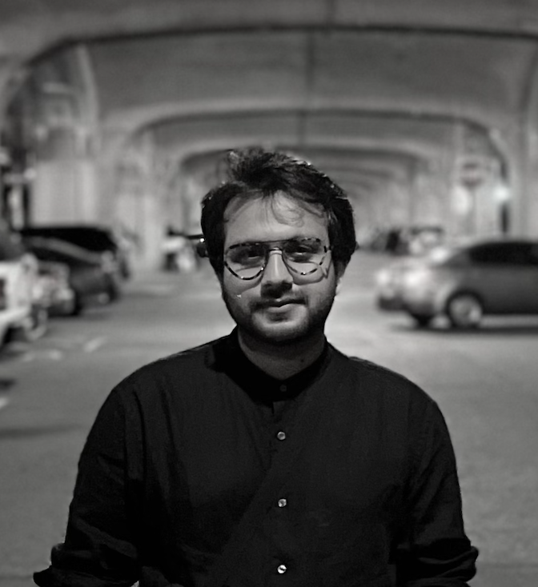

Nikesh Dahal

I am a researcher and an educator from Nepal, with formal training in ecology and evolutionary biology. I received my PhD from the University of Michigan, Ann Arbor, USA. Currently, I am working as a postdoctoral research associate at the University of York, UK.
While formally trained as a biologist, I'm broadly interested in science, politics, and their interdependent relationship, particularly in the context of the ongoing biodiversity crisis. To this end, I believe that a historical materialist approach is key to both making sense of the Anthropocene and critically engaging with the material and intellectual histories of biodiversity science.
In my experience, engaging in rigorous interdisciplinary work is very challenging. In part, this is because such inquiries often require questioning some of the fundamental premises of one's own discipline while meticulously engaging with the histories and methods of other disciplines. In this process, I've found informal learning spaces to be key to serious and critical interdisciplinary engagement. They offer the intellectual freedom to question disciplinary assumptions and room to experiment and make mistakes without the pressure of producing commodified knowledge. I'm always excited to connect with people who have had similar experiences.
Feel free to reach out to me at dahal.nikesh [at] gmail [dot] com.